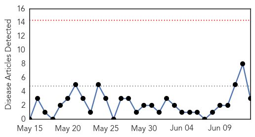
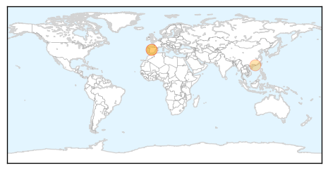
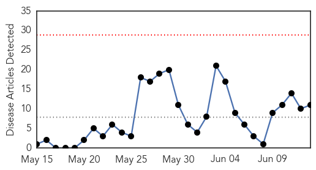
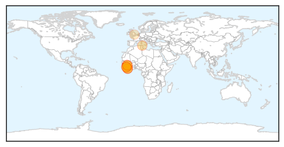
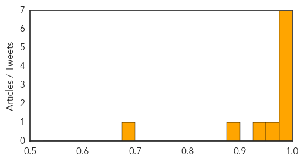

Influenza
30-Day Web Trend
0 alerts, 0 warnings

30-Day Twitter Trend
Article Locations
Article Confidences

Top Articles:
Top Tweets:
-
No tweets found for Jun 13, 2014
Ebola
30-Day Web Trend
0 alerts, 0 warnings

30-Day Twitter Trend
Article Locations
Article Confidences
Top Articles:
- 1.000
- Curbing Guinea’s other outbreaks
- 0.999
- Sierra Leone suspends trade fairs, closes schools to fight Ebola
- 0.999
- Sierra Leone shuts borders, closes schools to fight Ebola
- 0.998
- Sierra Leone Ebola Death Toll Doubles
- 0.995
- Ebola Outbreak Becomes Among Africa's Worst
- 0.991
- ‘Miracle’ mum-to-be in Sierra Leone tells of Ebola recovery
- 0.985
- Pregnant woman Victoria Yillah first to survive Ebola in Sierra Leone
- 0.958
- UNICEF-Liberia Ebola Virus Disease: SitRep #23, 13 June 2014 - Liberia
- 0.936
- Sierra Leone closes schools in ebola affected area
- 0.895
- Kailahun Descendants want Nationwide State of Emergency
- 0.685
- Religion news in brief, 6/14
Top Tweets:
-
No tweets found for Jun 13, 2014